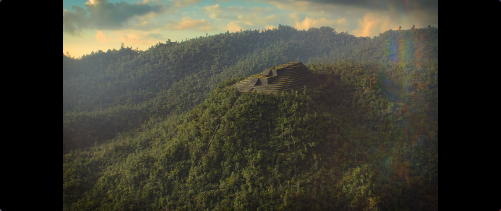
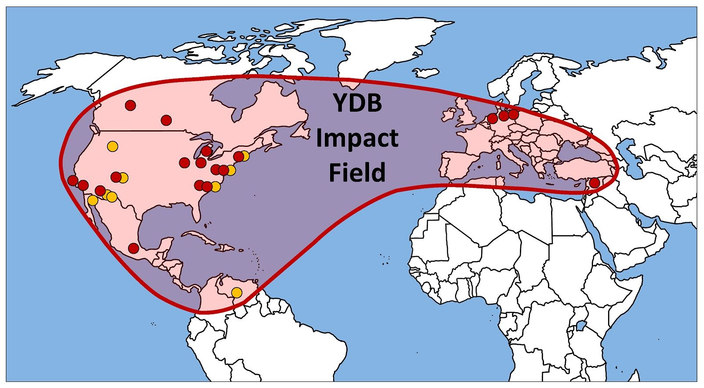
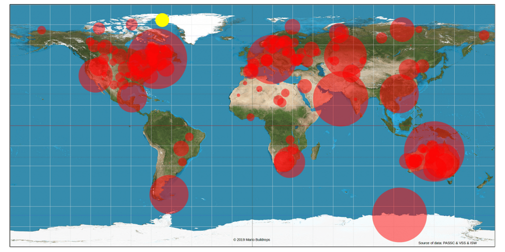
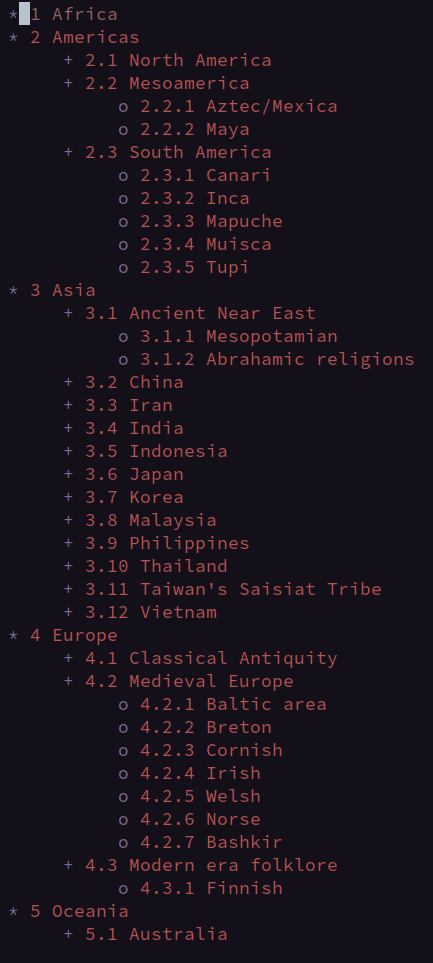
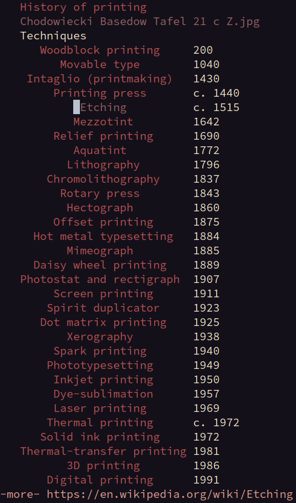

Definição:
O
conhecimentoconstitui-se no condensar de tempo, no sistema nervoso. Isso é, o conjunto de experiências, sensações e impressões processadas e eventualmente registradas pelo sistema nervoso.
"Tempo-condensador"Alfred Korzybski (1879-1950), o fundador da Semântica Geral, distingue as classes da vida em: 1
Químico-condensadora (Chemistry-binding).Espaço-condensadora (Space-binding).Tempo-condensadora (Time-binding).
O humano, em sua formulação, é um tempo-condensador e é o que o distingue
de outras formas de vida.
Essas características definem e diferenciam as vidas desses seres vivos.
Essas características definem e diferenciam a vida desses seres vivos.
Essa característica de síntese-temporal (time-binding) define e diferencia a vida desses seres vivos.
Civilização arquiologicamente perdida, da última era do gelo? ~12.800 A.c. (Younger Dryas) 2

Impacto de asteroides, e o Young Dryas.



Ao tempo que os Espanhóis chegaram no “Novo Mundo”, Quetzalcoatl era simbolizado como deus dos ventos, patrono dos padres, e inventor dos calendários e livros.3
Comunicação em Massa.